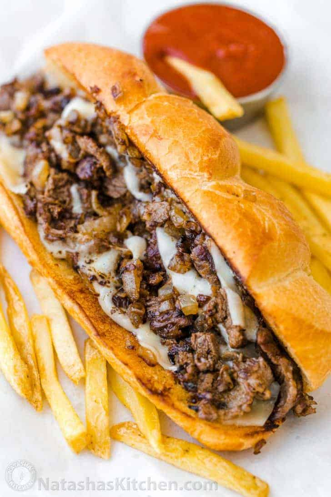

Philly cheesesteak

Description
This lemonade recipe is the perfect balance of sweet and tangy. We're sharing our favorite proportions of sugar to lemon juice, but you can add more sugar or more lemon juice to taste.
Ingredients
- We prefer using organic sugar to make the simple syrup and sweeten the lemonade.
- freshly squeezed lemon juice is ideal, and you'll need 6-8 lemons depending on the size.
Step by step:
- Make simple syrup
- simmer 1 cup water and 1 1/2 cups sugar to dissolve the sugar. Cool to room temperature and chill.
- Squeeze
- 1 1/2 cups fresh lemon juice and refrigerate.
- To serve
- combine 7 cups cold water, chilled sugar syrup, and chilled lemon juice. Serve over glasses filled with ice and garnish with lemon slices.